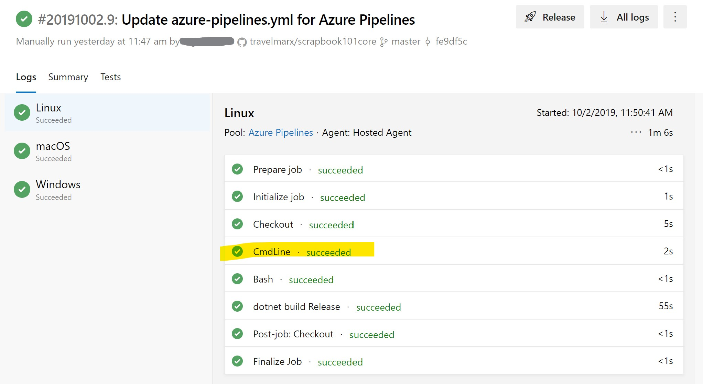

Pipeline setup
Overview
Our goal is to create a Azure pipeline process to build docs (and run other tasks) automatically upon check-in of code. To do this, we turn to devops. The term is a composed of the terms development (Dev) and operations (Ops) and represents a new way of thinking about development and operation processes as tightly connected together. For more information, see What is DevOps? In particular, we'll be using Azure Devops, which provides ways to implement continuous integration (CI) and continuous delivery (CD) processes using a pipeline. A pipeline in its simplest sense is a series of tasks you want to run. In our case, we want to compile code, optionally run any tests like checking quality, and create documentation with DocFx.
Our desired authoring / developer flow is:
Code or author content.
Check in changes.
A pipeline automatically builds upon detected changes to code or content.
Starting setup
To approach the ideal process flow described above, our first steps in the devops world went something like this:
Go to Azure devops.
Create a project "Scrapbook101core" in the organization that was created when we signed up.
Go to Pipelines section of the project, and create a new Build pipeline.
Connect to GitHub, select the Scrapbook101core repo, and Run.
Configure the pipeline as "ASP.NET Core". For more information, see Build, test, and deploy .NET Core apps.
Configuring a pipeline will create am azure-pipeline.yml file.This config file is at the root of the GitHub project.Save and run the pipeline. (You can commit directly into master or create a branch that you'll have to merge later.)
trigger: - master pool: vmImage: 'ubuntu-latest' variables: buildConfiguration: 'Release' steps: - script: dotnet build --configuration $(buildConfiguration) displayName: 'dotnet build $(buildConfiguration)'
Notes:
Do I pay? There is a free tier Azure Dev Ops options to get started. For small tests and limited use, you probably won't pay. For more information, see Build GitHub repositories.
What happened when running a pipeline with the YML file above? The steps built the site as if you built in Visual Studio.
If you make a changes to any file in the repo, the build process will kick off again because the trigger parameter in the pipeline config file.
Under variables add system.debug: true to get debug information in the logs. See this troubleshooting article.
Custom build task
So far, so good. Our next step was to play around with the YML config file. First, we read up on jobs and agents. Remember, our goal is to build the docs in the pipeline. But before doing that, we need to know about running tasks.
Create a simple job. Modify the azure-pipelines.yml file to say "Hello World". Check in the changed file. Build the pipeine, or if you have followed this far, the pipeline will build itself because you changed the YML file and checked in the changes.
steps: - bash: echo "Hello World" - script: dotnet build --configuration $(buildConfiguration) displayName: 'dotnet build $(buildConfiguration)'Create different agents. Add this to config and run.
jobs: - job: Linux pool: vmImage: 'ubuntu-latest' steps: - script: echo hello from Linux - bash: echo "Hello World" - script: dotnet build --configuration $(buildConfiguration) displayName: 'dotnet build $(buildConfiguration)' - job: macOS pool: vmImage: 'macOS-latest' steps: - script: echo hello from macOS - job: Windows pool: vmImage: 'windows-latest' steps: - script: echo hello from WindowsIn the screenshot below, clicking on the cmdline task would show the output from the echo commands in the YML config file.

Go back to simpler config file based on vmImage = 'windows-latest'. Save and run.
trigger: - master pool: vmImage: 'windows-latest' variables: buildConfiguration: 'Release' steps: - script: echo "hello from Windows" - script: dotnet build --configuration $(buildConfiguration) displayName: 'dotnet build $(buildConfiguration)'
PowerShell task
Our next step was to figure out how to run a PowerShell script with the idea that we will create a PowerShell build script. So, let's start with "Hello World".
Create a simple PowerShell in the repo at this location: .\scripts\builddocs.ps1
write-host "Hello World from PowerShell!"Modify the config above to use this script. (Here's a help page.)
steps: - pwsh: .\scripts\builddocs.ps1 - script: dotnet build --configuration $(buildConfiguration) displayName: 'dotnet build $(buildConfiguration)'Check both changes in to kick of a pipeline build.
The hosted Windows 2019 we are using has a pre-installed software, including:
Powershell Core, a cross-platform (Windows, Linux, and macOS) version of PowerShell.
Chocolatey, a Windows package manager. We'll use Chocolately to install DocFx.
These two components together will be enough to run our builddocs.ps1 script.
Build task
After a bit of trial and error we were able to build a simplistic build script builddocs.ps1.
NOTE
We also found it useful to create a local script simultaneously to test out ideas, with more or less the same commands as the script for the pipeline. The local script is localbuild.ps1. To run the local build script start in the root directory and run .\scripts\localbuilds.ps1 in a PowerShell terminal window. You can do this from inside of Visual Studio Code. The information below assumes this setup.
Here is an overview of the steps taken in the doc build scripts.
Install Chocolately with
choco install docfx -y.Only in the pipeline doc build script do we do this.
Run docfx with
docfx metadataanddocfx build.Note that for the pipeline build, we don't need to serve the docs like we might do building locally so we don't run
docfx --serve. Also, we have to make sure we are in the right directory to run these commands so that the docfx.json file is found.Copy all files from docbuild\_site to docs folder.
Looking at the task log, you should see that the script path on the agent is: "D:\a\1\s". By default, code is checked out into a directory called "s". Inside the build script, we can change directory for example to: "D:\a\1\s\docbuild". For more information about directories on agents, see Pipeline options for Git repositories.
Update the repo, by pushing changed files in the docs folder to GitHub.
Local. Using the local build script from inside of Visual Studio Code set to the master branch, we can do something like this:
git status git add . git commit -m"Pipeline build check in." git pushPipeline. For the pipeline build script we are in a different situation because have a detached head. In a detached head situation, changes that are committed in this state are not remembered unless you create a branch and commit them. See the documentation for how to run git in scripts. For more information about detached head, see How to fix a detached head and the GitHub docs for git-checkout.
The flow of git commands looks something like this:
git config --global user.email "travelmarx@live.com" git config --global user.name "Travelmarx" git status git add -A git branch tmp git checkout master git merge tmp git commit -m"[skip ci]Pipeline build check in." git pushNotes:
The "[skip ci]" added to the commit message avoids the script's push from triggering the pipeline build. We don't the doc build triggering the pipeline build.
We needed to add
git config --global user.emailandgit config --global user.namefor the script to work.Finding the right combination of commands for the pipeline build script was the most time consuming part of setting up the pipeline.
The key problem we ran into was that we had to redirect stderr to stdout in the PowerShell script with
$env:GIT_REDIRECT_STDERR = '2>&1'. This was described in this issue. We tried to attach the problem with using-qswitch on git commands but that only took us so far and we needed the redirect.
Other thoughts on the pipeline build task:
We noticed that the pipline build checks in a lot of files, basically everything in \docs, even if we made a very small change. Building locally however, we observed tha fewer files were changed, which got us wondering why this was the case. Here are a couple of reasons we discovered:
In the YML files in the docbuild\api folder, the repo tag ends with ".git" for locally generated files but not for pipeline built YML files. I suppose we can control for this.
Different versions of DocFx cause the HTML meta tag for "generator" to differ.
Even after ensuring we are using the same DocFX version, there are big differences in YML code but "minor" differences in the rendered the HTML. Minor differences like fully-qualified return type for local builds. It seems the customized class template (see Build with DocFX) is being used in both cases. This requires further investigation as to what is going on.
We ran into the (obvious in retrospect) problem where a pipeline build kicked off and in the meanwhile we updated the repo. When the build task on the agent went to push changes we got a message about failing to push because the remote contained work that isn't local, suggesting a
git pullfirst. The two processes accessing and making changes to the repo (local Visual Studio Code and the pipeline) are both using the master branch which isn't the correct way to do it. We should be working on branches and then merging. See the next section.
Final workflow
After getting our pipeline build task working against master, we realized that our workflow was a bit of mess. Granted this is a small dev effort, but still, it could use improving.
So with the pipeline in place, we adopted this workflow.
Authoring (code or docs) is done on a working branch instead of master.
The branch can be tested locally with
docfx --serve. This builds docs in docbuild\_site folder. We do not copy those changes into docs folder because we don't want to check in HTML for the working branch.Run
git pull origin masterfrom the working branch to pick up changes from master.
Push working branch changes to GitHub with
git commit -a -m"Change note." git pushThere is no web site view option for GitHub pages for non-master branch, i.e., the web site https://travelmarx.github.io/scrapbook101core/index.html is based off the master branch. Also, we haven't checked in any HTML on the working branch.
The push to the repo working branch does not kick off the pipeline build, which only has a trigger on master.
trigger: - master pr: none
On GitHub, merge working branch into master.
This process is what kicks off the pipeline build, which then builds the HTML that appears in docs folder of the master branch.
To do the GitHub merge locally if desired, use these commands (assuming master and working branches):
git checkout master git merge working git push origin masterAfter running this locally, switch back to the working branch to avoid making chanages in master.
In the process of working through this workflow, we realized that perhaps a better workflow would be to render HTML docs checked into a different repo altogoether and then we would cleanly separate web site content from code and doc source content.